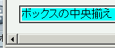
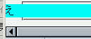

閲覧領域の幅より広い幅を持つボックスを中央寄せ（margin: auto;）すると、横スクロールバーが表示される。これを使用して閲覧領域の右にはみ出した部分へスクロールすることはできるが、左にはみ出した部分へはスクロールできない。
<div style="width:1000px; background:aqua; margin:auto;"> ボックスの中央揃え</div>
ブラウザのウィンドウを1000pxより小さくしたとき、div要素の左端を表示できるかを確認してください。
WinIE6.0での表示（標準モード）
N7.1での表示（標準モード）
例示ような状態でdiv要素のボックスが左にはみ出すこと自体はCSS2勧告の「margin-leftとmargin-rightの両方にauto値が指定された場合は、左右のマージンを等量にする」という規定に従った実装です。しかし、閲覧領域から右にはみ出した部分はスクロールによって表示できるが左にはみ出した部分はそれができないという点はバグとみなせる可能性があります。この問題と似たような事例がBugzillaに挙げられています。
閲覧領域をはみ出す可能性のある要素に対して最大幅を指定することで左にはみ出す部分を表示できない問題を回避できます。
<div style="width:1000px; max-width:100%; margin:auto;">ボックスの中央揃え</div>
Moz1.5b、Netscape7.1でこの現象の発生を確認しました。